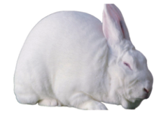

Agriculture for Secondary Schools
animals, making them versatile and valuable in different contexts. The description
of some common rabbit breeds, each with its unique characteristics, is explained
in Table 8.1
Table 8.1: Some common breeds of rabbits
Breed
Image
Description
New Zealand
white
Origin: United States
Physical features: Medium to
large size, white fur, pink eyes,
and a muscular build.
Notable traits: Fast growth and
high meat yield; often used in
commercial meat production.
California white
Origin: United States
Physical features: White fur
with dark markings on the ears,
nose, paws, and tail; medium
to large size.
Notable traits: Excellent meat
breed; calm temperament and
good mothering abilities.
Flemish giant
Origin: Belgium
Physical features: It is large,
weighing up to 6 kg or more,
has a long body and large ears,
and comes in various colours.
Notable traits: It is friendly and
docile, one of the giant rabbit
breed used for meat and fur.
Chinchilla
Origin: France
Physical features: It is medium-
sized, with dense, soft fur
and a distinctive grey colour,
resembling a chinchilla.
Notable traits: A bred for their
fur; also used for meat and as
pets.
131
Student’s Book Form Two